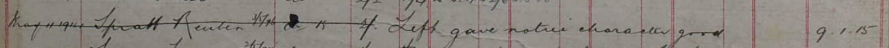
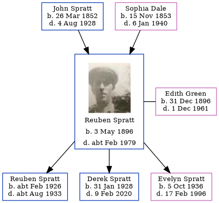

Reuben Spratt 1896 - c1979
[ Home ] | [ Calendar ] | [ Surnames Index ] | [ Errors ] | [ Family History ]The child of John Spratt and Sophia Dale, Reuben Spratt, the great-uncle of Nigel Horne, was born in St Nicholas-at-Wade, Kent, England on 3 May 18961,2,3,4,5,6 and married Edith Green (with whom he had 3 children: Reuben A, Derek John and Evelyn Maud) in Thanet, Kent, England around Nov 19247. Like his father, he was an agricultural labourer.
During his life, he was living at 2 Nash Court Cottage, Nash Road, Margate, Kent on 31 Mar 19011 - less than a mile from his sister May Spratt who was living at 2 Nash Court Cottage, Nash Road, Margate, Kent and on 2 Apr 191110; at Nash in Thanet on 19 Jun 19213; at 2 Alma Place, Margate, Kent in 19359 and on 29 Sept 193911; and at 4 Alma Road, Margate, Kent in 19618. He served in the army (private 201124 East Kent Regiment) He served in the army (private 201124 East Kent Regiment)In 1921 he was working at Joseph Gunson Farmer.
He died c. Feb 1979 in Thanet4,5.
Parents
- John was born on 26 Mar 1852
- Sophia was born on 15 Nov 1853
Children
- Reuben A was born c. Feb 1926
- Derek John was born on 31 Jan 1928
- Evelyn Maud was born on 5 Oct 1936
Citations
- 1901 England Census Online publication - Provo, UT, USA: The Generations Network, Inc., 2005.Original data - Census Returns of England and Wales, 1901. Kew, Surrey, England: The National Archives of the UK (TNA): Public Record Office (PRO), 1901. Data imaged from the National
- 1911 England Census Online publication - Provo, UT, USA: Ancestry.com Operations, Inc., 2011.Original data - Census Returns of England and Wales, 1911. Kew, Surrey, England: The National Archives of the UK (TNA), 1911. Data imaged from the National Archives, London, England.
- 1921 Census Of England & Wales - Findmypast (was age 25 and the son of the head of the household)
- England & Wales deaths 1837-2007 - Findmypast
- England & Wales, Death Index: 1984-2005 Online publication - Provo, UT, USA: The Generations Network, Inc., 2007.Original data - General Register Office. England and Wales Civil Registration Indexes. London, England: General Register Office. © Crown copyright. Published by permission of the Cont
- England & Wales, FreeBMD Birth Index, 1837-1915 Online publication - Provo, UT, USA: The Generations Network, Inc., 2006.Original data - General Register Office. England and Wales Civil Registration Indexes. London, England: General Register Office. © Crown copyright. Published by permission of the Cont
- England & Wales, Marriage Index: 1916-2005 Online publication - Provo, UT, USA: The Generations Network, Inc., 2009.Original data - General Register Office. England and Wales Civil Registration Indexes. London, England: General Register Office. © Crown copyright. Published by permission of the Cont
- From his wife's probate record
- 1935 Kelly's Thanet Directory
- 1911 Census for England & Wales - Findmypast (was age 15 and the son of the head of the household)
- 1939 Register - Findmypast (was the head of the household)
Media
Reuben Spratt
UK Railway Employment Record

1935 Kelly's Thanet Directory

England & Wales births 1837-2006 - BMD/B/1896/2/AZ/000551/349
1939 Register Transcription - TNA-R39-1755-1755D-006-38
England & Wales deaths 1837-2007 Transcription - BMD-D-1979-1-AZ-001213-054
1911 England, Wales & Scotland Census Transcription - GBC-1911-RG14-04484-0189-5
Medal Index Cards Transcription - GBM-MCI-4217148
England & Wales marriages 1837-2008 Transcription - BMD-M-1924-4-AZ-001097-105
1921 Census of England & Wales - GBC/1921/RG15/04434/0087/04
Family Tree
Map
Generated by ged2site. Last updated on Jul 3, 2024
Known Issues
Listed in the residence for 1935, but spouse Edith Green is not
Location for "employment" on 1921 is empty
Location is Empty